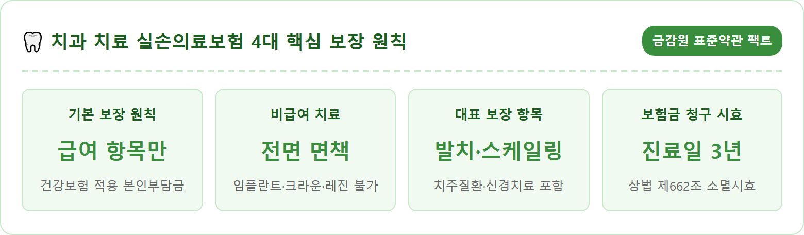
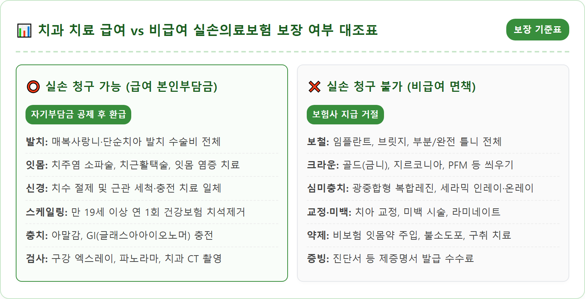
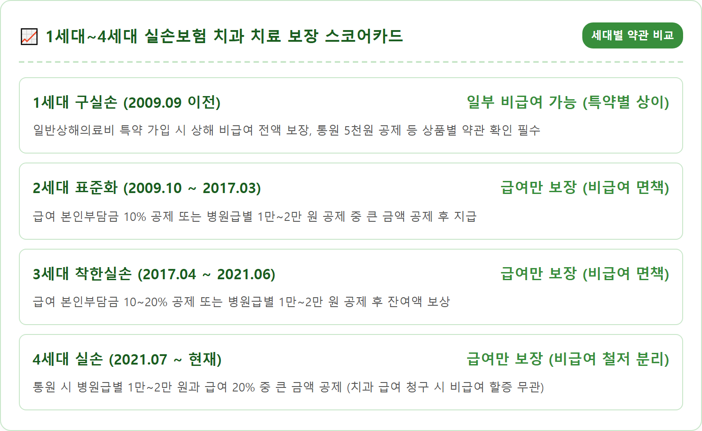
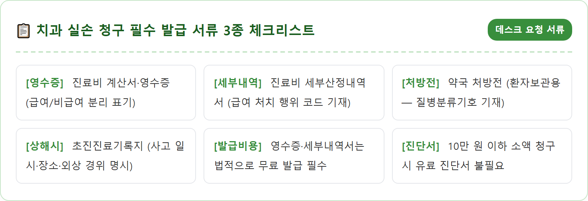
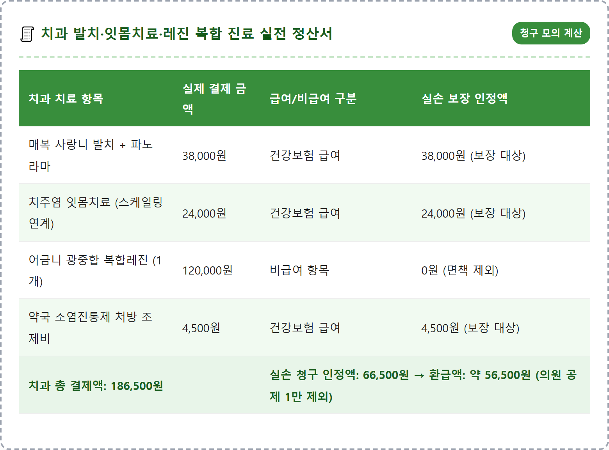
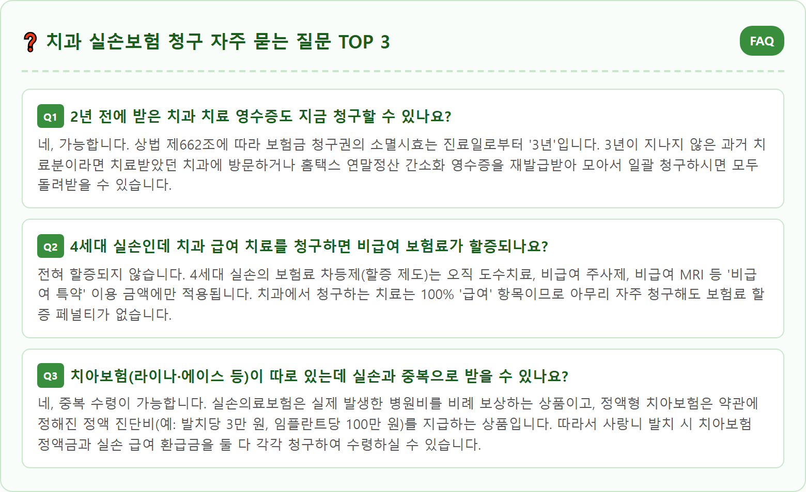

치과 치료 실손보험 청구 되나 — 급여 vs 비급여 항목 비교표와 1~4세대 세대별 보장 범위 체크리스트
실손의료보험에서 치과 치료는 국민건강보험이 적용되는 '급여' 항목의 본인부담금만 보장되며, 임플란트·크라운·레진·치아교정 등 '비급여' 치료는 전 세대 표준약관상 원칙적으로 보장 대상에서 제외(면책)됩니다.
치료 목적의 사랑니 발치, 잇몸치료(치주염), 신경치료, 연 1회 건강보험 스케일링, 파노라마 X-ray 등은 통원 실손으로 자기부담금을 공제하고 환급받을 수 있습니다. 1세대(2009년 이전)부터 4세대까지 세대별 치과 보장 약관 차이 비교표, 상해 사고로 인한 치아 파손 시 예외 보장 기준, 치과 데스크 필수 발급 서류 3가지와 모바일 앱 청구 요령까지 금융감독원 표준약관 기준으로 명쾌하게 정리해 드립니다.
📷 AI 대표 메인 썸네일 생성 영역images/261021/7_ins_dental_treatment_indemnity_insurance_coverage_guide_1.png
A realistic and professional conceptual still life photograph representing Korean medical indemnity health insurance coverage for dental treatments. On a clean wooden desk, a dental medical clinic billing receipt with itemized national health insurance coverage stamps sits alongside an official indemnity insurance policy handbook, a smartphone displaying a mobile insurance claim submission screen, and a clean professional dental teeth model tool. A soft daylight illumination casts gentle reflections on a digital calculator showing calculated deductible numbers. Organized, authoritative healthcare and insurance finance atmosphere, ultra-high detail 8k resolution, photorealistic quality, 1:1 aspect ratio.
치과 진료비 영수증 급여·비급여 항목 구분과 실손보험 모바일 청구 서류 / AI 제작 이미지

치과 치료 실손보험 청구 4대 핵심 지표 / 인포그래픽 카드
01 | 치과 치료 실손보험 청구의 기본 대원칙 — 급여 보장과 비급여 면책 기준
치과 치료를 받고 수십만 원에서 수백만 원의 진료비가 나왔을 때, "내가 가입한 실손의료보험(실비)으로 청구할 수 있을까?" 궁금해하는 분들이 많습니다.
금융감독원의 실손의료보험 표준약관(질병통원의료비 항목)에 명시된 기본 대원칙은 단 한 문장으로 요약됩니다.
"치과 치료(한국표준질병사인분류 K00~K08)로 인한 의료비는 국민건강보험법에서 정한 '급여' 본인부담금에 한하여 보장하며, '비급여' 의료비는 보상하지 아니한다."
즉, 치과 진료비 영수증을 펼쳤을 때 좌측의 '급여' 란에 찍힌 본인부담금은 실손보험으로 청구하여 돌려받을 수 있지만, 우측의 '비급여' 란에 찍힌 고액의 치료비는 원칙적으로 보험사에서 1원도 지급하지 않는 면책(免責) 사항입니다.
많은 분들이 치과 치료 전체가 실손에서 제외된다고 오해하여 마땅히 받을 수 있는 급여 진료비 환급을 포기하거나, 반대로 임플란트나 지르코니아 크라운 같은 고가의 비급여 보철 치료도 실손이 될 것으로 기대했다가 청구 거절 통보를 받고 분쟁을 겪곤 합니다.
따라서 병원에 가기 전 어떤 치료가 급여이고 어떤 치료가 비급여인지 정확한 경계를 알고 영수증을 확인하는 것이 필수적입니다.
02 | 실손 청구 가능한 대표 급여 항목 — 사랑니 발치·잇몸치료·신경치료
치과에서 받는 진료 중 국민건강보험 혜택이 적용되어 실손보험 청구가 가능한 대표적인 '급여' 항목들은 다음과 같습니다.
첫째, '사랑니 발치 및 단순 발치'입니다. 잇몸 속에 묻혀 염증을 유발하는 매복 사랑니나 충치로 손상된 치아를 발치하는 시술은 100% 건강보험 급여 항목입니다. 엑스레이 및 CT 촬영비, 마취비, 발치 수술비, 지혈제(급여 인정 기준) 등이 모두 포함되어 통원 실손으로 환급받을 수 있습니다.
둘째, '치주질환(잇몸병) 치료'입니다. 치은염이나 치주염으로 인해 잇몸이 붓고 피가 날 때 진행하는 치주소파술(잇몸 속 치석 제거), 치근활택술 등 잇몸 치료는 급여 적용 대상입니다.
셋째, '신경치료(근관치료)'입니다. 치아 내부 신경에 염증이 생겼을 때 근관을 소독하고 충전재를 채워 넣는 모든 신경치료 과정은 건강보험 급여가 적용됩니다.
넷째, '아말감 및 글래스아아이오노머(GI) 충치 충전'입니다. 레진이나 인레이는 비급여지만, 국가가 인정한 아말감이나 흰색 치과용 시멘트인 GI 재료로 때우는 충치 치료는 급여 항목에 해당합니다.
다섯째, 만 19세 이상 국민이라면 누구나 연 1회(매년 1월 1일~12월 31일) 적용되는 '건강보험 스케일링(치석제거)' 역시 급여 본인부담금(약 1만 5천 원~1만 7천 원 선)에 대해 실손 청구가 가능합니다.

치과 치료 항목별 국민건강보험 급여 vs 비급여 실손 보장 대조표 / 인포그래픽 카드
03 | 실손 청구 불가능한 비급여 항목 — 임플란트·크라운·레진·인레이의 면책 사유
환자 입장에서 가장 큰 목돈이 들어가는 치료들은 안타깝게도 대부분 실손보험에서 보장하지 않는 '비급여' 항목에 집중되어 있습니다.
대표적인 면책 항목들의 실무 기준을 명확히 알아두셔야 합니다.
첫째, '임플란트 및 브릿지, 틀니'입니다. 인공 치아를 턱뼈에 식립하는 임플란트는 1개당 100만~150만 원 이상의 고액이 발생하지만, 전 세대 실손보험 약관상 비급여 보철 치료로 분류되어 실손 청구가 절대 불가능합니다 (단, 만 65세 이상 어르신 평생 2개 건강보험 급여 적용 시 급여 본인부담금 30%는 청구 가능).
둘째, 신경치료 후 치아 파절을 막기 위해 씌우는 '골드 크라운, 지르코니아 크라운'입니다. 신경치료 자체는 급여라 실손이 되지만, 그 위에 씌우는 40만~60만 원 상당의 크라운 보철물은 비급여이므로 청구할 수 없습니다.
셋째, 충치 치료 시 심미성을 위해 가장 많이 시술하는 '광중합형 복합레진 및 인레이/온레이'입니다. 치아 색상과 동일하게 메우는 레진(치아당 8만~15만 원)과 본을 떠서 때우는 골드/세라믹 인레이(치아당 25만~35만 원)는 건강보험 비급여 항목이므로 실손 환급 대상이 아닙니다 (단, 만 12세 이하 어린이의 영구치 충치 레진 치료는 건강보험 급여가 적용되므로 실손 청구 가능).
넷째, 치아 교정, 미백, 잇몸 성형 등 심미 개선 목적의 치료 역시 치료 목적이 아닌 외모 개선으로 분류되어 전액 면책됩니다.
04 | 1세대부터 4세대까지 가입 시기별 실손보험 치과 보장 약관 차이점
실손의료보험은 가입 시기에 따라 1세대(2009년 9월 이전), 2세대(2009년 10월~2017년 3월), 3세대(2017년 4월~2021년 6월), 4세대(2021년 7월 이후)로 세대가 나뉩니다.
치과 치료와 관련해서는 가입 세대별로 약관 규정에 미세한 차이가 존재하므로 본인의 증권을 반드시 확인해야 합니다.
1. 1세대 실손보험 (2009년 9월 이전 가입자):
1세대 중에서도 '일반상해의료비' 특약에 가입되어 있는 경우, 상해로 인한 치과 치료뿐만 아니라 약관에 따라 치과 통원 치료 시 비급여 항목까지 일부 보장되는 파격적인 상품이 극소수 존재합니다. 또한 질병입원의료비 특약의 경우 질병으로 치과 병원에 '입원'하여 치료받았을 때 한하여 비급여가 보장되는 상품도 있으므로, 2009년 이전 가입자라면 반드시 보험사 콜센터에 본인 약관의 '치과 질병코드 면책 조항'을 확인해보셔야 합니다.
2. 2세대 및 3세대 표준화 실손 (2009년 10월~2021년 6월):
표준약관이 도입되면서 치과의 질병 치료(K00~K08)는 '급여 의료비'만 보장하고 '비급여'는 명확히 면책하도록 통일되었습니다. 통원 1회당 의원 1만 원, 종합병원 1만 5천 원, 상급종합병원 2만 원(또는 급여 10~20%)의 공제금액을 뺀 나머지 급여 본인부담금이 지급됩니다.
3. 4세대 실손보험 (2021년 7월 이후 현재):
급여와 비급여가 완전히 분리되었습니다. 치과 급여 항목에 대해 통원 1회당 최소 1만 원(상급종합병원 2만 원)과 급여 의료비의 20% 중 큰 금액을 공제한 후 지급됩니다.

1~4세대 실손의료보험 치과 치료 보장 범위 및 자기부담률 비교 / 인포그래픽 카드
05 | 연 1회 건강보험 적용 스케일링과 잇몸치료 연계 시 실손 청구 요령
많은 분들이 일상적으로 받는 '연 1회 정기 건강보험 스케일링'도 실손보험 청구가 가능할까요? 결론부터 말씀드리면 "가능하지만 공제금액에 따라 환급 여부가 달라진다"입니다.
만 19세 이상 성인의 연 1회 건강보험 스케일링 진료비는 동네 치과의원 기준 총 3만 4천 원 안팎이며, 이 중 환자가 치과 데스크에서 직접 결제하는 본인부담금은 약 1만 6천 원~1만 7천 원 선입니다.
만약 본인의 실손보험 의원급 통원 공제금액이 1만 원(1세대 5천 원, 2~3세대 1만 원)이라면, 1만 6천 원 중 1만 원을 뺀 약 6천 원 안팎을 정상적으로 환급받으실 수 있습니다.
단, 4세대 실손보험이거나 공제금액이 1만 5천 원 이상인 경우 본인부담금과 공제액 차이가 미미하여 환급액이 몇백 원에 불과하거나 발생하지 않을 수 있습니다.
여기서 가장 유용한 실무 팁은 '잇몸 치료와 연계하는 방법'입니다.
단순 예방 목적이 아니라 잇몸에 붓기나 출혈이 있어 스케일링 후 치주소파술(잇몸 긁어내기)이나 잇몸 소독 등 치료 목적의 잇몸 시술을 함께 진행할 경우, 당일 총 급여 본인부담금이 3만~5만 원 선으로 증가하게 됩니다.
이 경우 의원급 공제금액 1만 원을 제하고도 2만~4만 원 상당의 의료비를 실손보험으로 깔끔하게 환급받으실 수 있습니다.
06 | 질병이 아닌 상해(넘어짐·사고)로 치아가 부러졌을 때의 예외적 보장 기준
치아가 손상된 원인이 충치나 풍치 같은 '질병'이 아니라, 길을 걷다 넘어지거나 교통사고, 운동 중 충돌 등 '급격하고도 우연한 외래의 사고(상해)'인 경우에는 보장 기준이 완전히 달라질 수 있습니다.
금융감독원 분쟁조정 사례에 따르면, 상해 사고로 인해 치아가 부러지거나 빠져서 치료를 받는 경우 '상해의료비' 혹은 '상해통원의료비' 특약이 적용됩니다.
상해의료비의 경우 질병과 달리 치과 치료 비급여 면책 조항이 적용되지 않는 상품이 많아, 사고로 손상된 치아의 레진 수복, 크라운 씌우기, 심지어 임플란트 식립 비용까지 약관에 따라 보상받을 수 있는 길이 열립니다.
이를 인정받기 위해서는 치과에 처음 방문했을 때 의사에게 사고 경위를 정확히 진술하여 초진기록지(진료차트)에 '넘어져서 부딪힘', '외상으로 인한 치아 파절' 등의 상해 원인이 반드시 명시되어야 합니다.
만약 초진기록지에 단순히 '치아 통증'이나 '치아 마모'로만 기재된다면 보험사는 이를 질병으로 간주하여 비급여 전체를 지급 거절하므로 초진 시 상해 사실을 의무기록에 남기는 것이 결정적으로 중요합니다.

치과 방문 시 챙겨야 할 실손 청구 필수 서류 3열 체크리스트 / 인포그래픽 카드
07 | 치과 데스크에 요청해야 할 필수 서류 3가지 — 영수증·세부내역서·초진기록지
치과 진료를 마치고 수납할 때 데스크에 어떤 서류를 요청해야 할지 몰라 유료 진단서를 비싸게 발급받는 실수를 하시는 분들이 많습니다.
통원 의료비 청구 시에는 비용이 드는 유료 진단서가 전혀 필요 없으며, 병원에서 무료로 즉시 발급해주는 서류 3가지만 챙기시면 충분합니다.
1. 진료비 계산서·영수증:
신용카드 매출전표나 간이영수증은 절대 인정되지 않습니다. 국민건강보험공단 규격의 '진료비 계산서·영수증'이어야 하며, 급여 본인부담금과 비급여 금액이 명확히 구분되어 기재되어 있어야 합니다.
2. 진료비 세부산정내역서:
어떤 치료를 받았는지 항목별 행위 수가와 급여 코드가 적힌 내역서입니다. 보험사 심사팀에서 사랑니 발치인지, 신경치료인지, 약제 투여인지 확인하는 핵심 서류입니다. 의료법상 환자가 요구하면 병원은 무료로 즉시 발급해주어야 합니다.
3. 환자보관용 처방전:
진료 후 약국에서 소염진통제나 항생제를 처방받았다면 처방전에 적힌 '질병분류기호(예: K05 치주염, K04 치수염 등)'를 통해 질병 코드를 입증할 수 있습니다.
단, 상해로 인한 청구이거나 청구 금액이 10만 원을 초과하여 질병 확인이 필요한 경우에는 1~2천 원 수수료가 드는 '초진진료기록지'나 '통원확인서(진단코드 기재)'를 추가로 구비하시면 됩니다.

치과 복합 진료 시 실손보험 청구 모의 정산 영수증 / 인포그래픽 카드
08 | 보험금 청구 모바일 앱 접수 순서와 10만 원 이하 간편 청구 팁
서류를 모두 준비하셨다면 보험사 지점을 직접 방문하거나 팩스를 보낼 필요 없이 스마트폰 앱으로 1분 만에 청구를 마칠 수 있습니다.
가입하신 보험사의 모바일 공식 앱(삼성화재, 현대해상, DB손해보험, 메리츠화재, KB손해보험 등)을 실행합니다.
로그인 후 메인 화면의 [보험금 청구] 메뉴로 들어갑니다.
청구 대상자(본인)를 선택하고 사고 유형에서 '질병' 또는 '상해'를 체크합니다.
치료받은 치아 부위와 진료 내용(예: "충치로 인한 사랑니 발치 및 신경치료")을 간단히 2~3줄로 입력합니다.
이어 스마트폰 카메라로 치과에서 받아온 진료비 영수증과 세부내역서를 평평한 곳에 놓고 그림자가 지지 않도록 선명하게 촬영하여 첨부합니다.
환급받을 본인 명의 은행 계좌를 확인하고 [청구 완료] 버튼을 누르면 접수가 완료됩니다.
통상 10만 원 이하의 소액 통원 치료비는 서류 심사가 매우 신속하여 접수 당일 오후 혹은 다음 날 오전에 신청 계좌로 보험금이 즉시 입금됩니다.

치과 실손보험 청구 자주 묻는 질문 FAQ / 인포그래픽 카드
09 | 치과 실손보험 청구 총정리와 똑똑한 환자 권리 찾기
치과 치료는 비급여 보철이 많아 실손보험 혜택을 전혀 볼 수 없다고 지레 짐작하고 수만 원의 환급금을 그냥 지나치는 분들이 여전히 많습니다.
사랑니 발치, 잇몸 치료, 신경치료, 정기 스케일링 등 우리가 치과를 찾는 가장 흔한 원인의 상당수는 국민건강보험이 보장하는 정당한 '급여' 항목입니다.
치과 진료를 마치신 후에는 반드시 진료비 계산서·영수증과 세부내역서를 발급받아 급여 란의 본인부담금을 꼼꼼히 확인하고 모바일 앱으로 간편하게 청구해 보세요.
정당하게 낸 보험료에 대한 혜택을 꼼꼼히 챙기는 것은 현명한 금융 소비자의 당연한 권리입니다.
과거 3년 이내에 치과 치료를 받은 내역이 있다면 지금 바로 치과 데스크에 영수증 재발급을 요청하여 잠자고 있는 내 보험금을 알뜰하게 돌려받으시기 바랍니다.